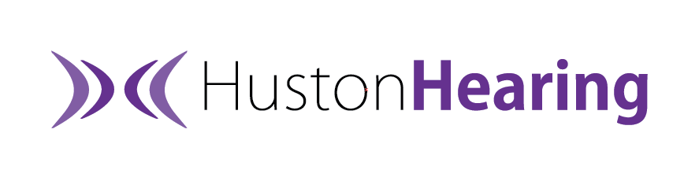
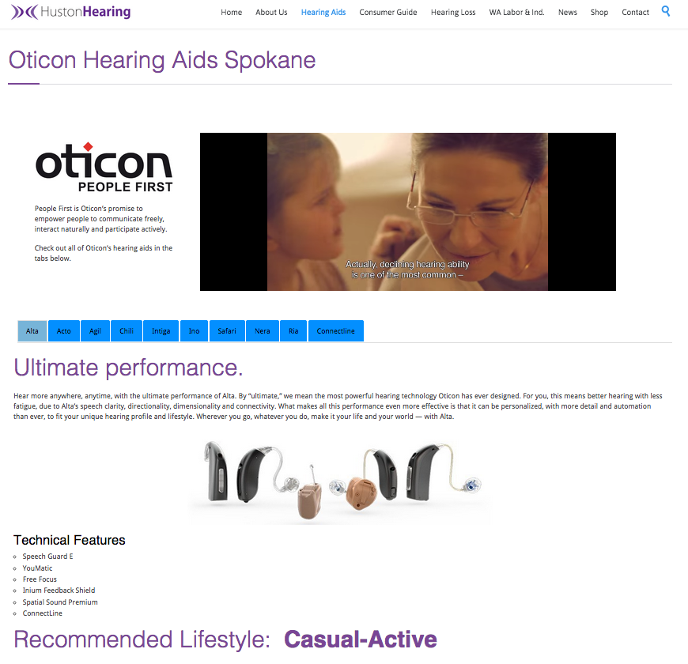

Huston Hearing Care & Audiology
My process when designing for Huston Hearing Care & Audiology. If you like what you see, let me know !
The Huston Hearing re-branding was one of the most ambitious and rewarding projects I’ve ever worked on. It was difficult being the only one doing all of the design work and striving for my best work at all times, but I enjoy that kind of challenge. Here are few of my favorite highlights from the process.
Huston Hearing Logo

I design Huston Hearing's new logo to make it more modern and to focus more on the 'hearing' aspect of the business so that it was more apparent to people what the company does.
Their logo is the most visible element of their identity. It’s a guarantee of quality that unites its products and services.
The logo icon used represents sound waves emitting from a central point. The two tone colors help bring depth to the logo icon, also symbolizing low and high frequency sound waves that can enter the ear.
The font ‘Huston Hearing’ is also distinguished by variation in boldness and color.
‘Huston’ uses Kozuka Gothic Pro Light Font.
‘Hearing’ uses Kozuka Gothic Pro Heavy Font. ‘Hearing’ is also colored purple. A heavier font and bolder color bring emphasis to the word ‘Hearing’.
Logo Variations
I created five versions of the logo and there are no other color variations acceptable to ensure brand unity on all mediums.
Home Page
The site build needed to resemble Huston Hearing's new look so the main focus was the home page. The staff wanted to be able to continue to manage and maintain the site after it was re-designed, so using WordPress as the CMS was perfect for that. Also making it responsive was a huge focus as well.
The first screenshot of the home page is taken of the content before the fold. It was designed with an attractive slider in the middle to host important pages of the site and/or ongoing promotions from the company. Below the slider, it was very important to show three of the most viewed pages as well as the contact information.
Home Page continued

After many interviews and phone calls to theHuston Hearing staff, it was made known to me that referrals were a huge part of their business. The focus was implemented as the user continues to scroll.
The being said, the next important piece of content was a welcoming to the site by Huston Hearing as well as a few testimonials from some of Huston Hearing's happiest patients.
Home Page continued
Following that, I decided to put a very inspirational quote from the owner, to help the user feel like Huston Hearing was a place that could change their life.
I used this as an opportunity to implement a social media box, hoping that this specific placement would increase more action after reading a positic quote.
Home Page continued
The next important piece of content was to show all of the brands that Huston Hearing services, which according to the staff, is a question that a lot of people ask when calling the company. So this content seemed very necessary to include on the home page.
The rest of the screenshots show the continued unity of branding throughout their website.

Promotional Materials

Promotional Materials and Advertisements needed to follow the elements of branding as well.